VMware 虚拟机基础入门教程
作者：TeliuTe 来源：基础教程网
二、创建虚拟机 返回目录 下一课安装好程序以后，就可以用它来创建虚拟电脑了，下面我们来看一个练习；
1、启动程序
1）进入自己的文件夹，进入vmware6.03-80004文件夹，往下找到v开头的一个彩色图标文件vmware，双击运行它；
2）出来一个窗口，中间有三项，点第一个“新建虚拟机”；
2、新建虚拟机
1）点击“新建”后会出来一个向导对话框，点“下一步”继续；
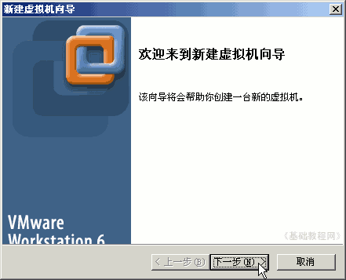
2）接下来选择“自定义”，可以设定虚拟机的配置，然后点“下一步”继续；
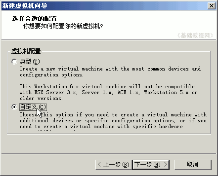
3）在接下来的虚拟机版本中点“下一步”继续，使用当前的6.0版本；
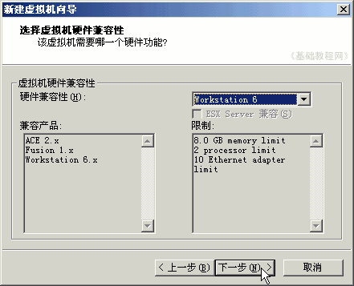
4）接下来是虚拟机的操作系统，可以安装windows或者linux，这儿安装XP操作系统，点“下一步”继续，要安装win98或win2000，点下面的“版本”下拉列表中选择；
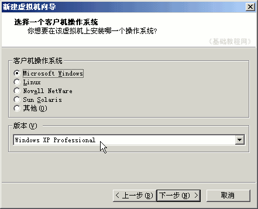
5）在接下来的虚拟机名称里，把上面改成WinXP，下面也会自动改，点“下一步”继续，
也可以把下面的保存位置改一下；
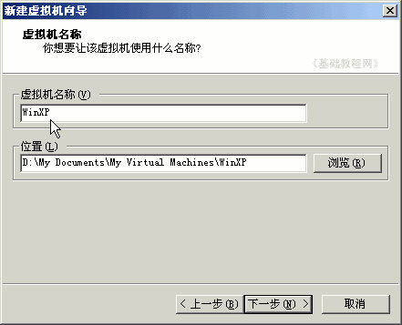
6）接下来处理器数量，单核和双核等，拿不准直接点“下一步”继续；
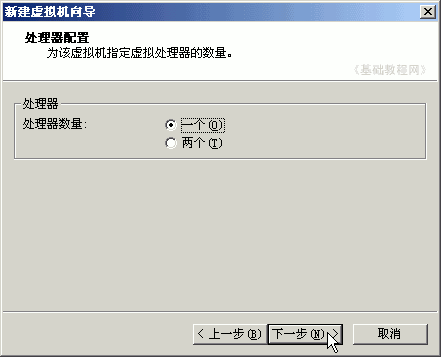
7）接下来的内存大小根据主机的多少，给虚拟机的XP分上256M左右，点“下一步”继续；
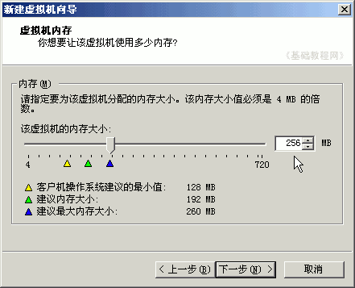
8）接下来的网络连接，使用前面安装的桥接，直接点“下一步”；
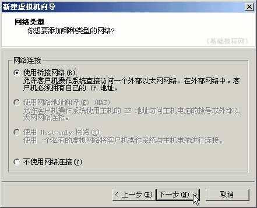
9）接下来的硬盘接口，直接点“下一步”继续；
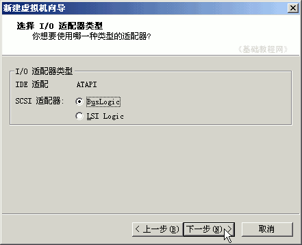；
10）接下来的创建硬盘中，选择第一个“新建磁盘”，点“下一步”继续，
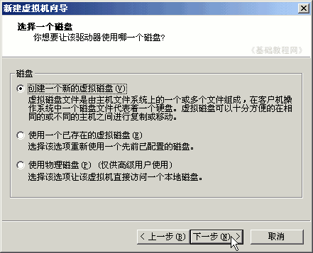；
11）接下来的磁盘类型中，直接点“下一步”，选用默认的IDE类型；
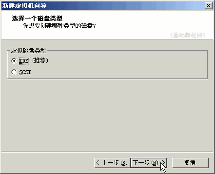；
12）接下来的虚拟硬盘大小，直接点下一步，这样磁盘大小是动态增长，打勾以后会强制使用设定的大小空间；
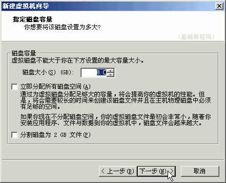；
13）接下来的虚拟磁盘文件名，使用默认即可，直接点“完成”，注意磁盘文件的扩展名是.vmdk，这个文件以后会变得很大；
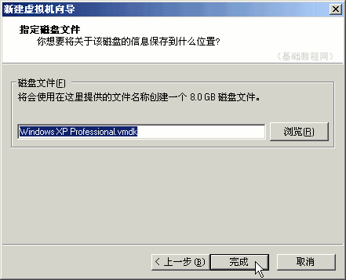；
这样我们就创建好了一个，可以用来安装Windows XP的虚拟电脑，电脑的名称是WinXP；
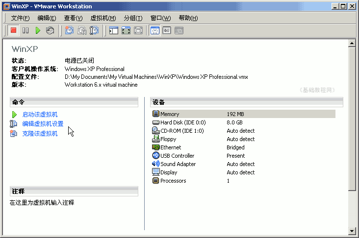
本节学习了创建虚拟机的基本操作，如果你成功地 完成了练习，请继续学习下一课内容；
本教程由86团学校TeliuTe制作|著作权所有
基础教程网：http://teliute.org
美丽的校园……
转载和引用本站内容，请保留版权信息和本站链接。